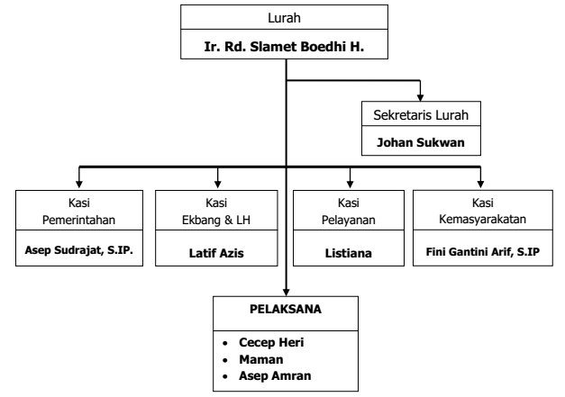
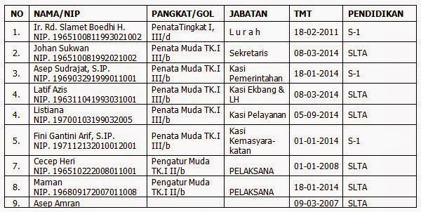

Sejarah Kelurahan
Visi Kelurahan
Seiring perkembangan lingkungan di Kelurahan Rancanumpang, kondisi sosial masyarakat, potensi, peluang dan tantangan ke depan, maka Kelurahan Rancanumpang telah menetapkan visinya yaitu “RANCANUMPANG RUMASA” yang dijabarkan sebagai harapan untuk :
”MEWUJUDKAN MASYARAKAT RANCANUMPANG YANG RUKUN, MAJU DAN SEJAHTERA”.
Penjelasan visi tersebut yaitu :
- Masyarakat yang rukun adalah kondisi dimana antara warga masyarakat senantiasa saling menghormati dan menyayangi antara sesama manusia. Perbedaan gender, agama, strata sosial ekonomi dan pendidikan diupayakan semaksimal mungkin menjadi perekat persatuan dan kesatuan, kebersamaan serta kerukunan semua komponen masyarakat.
- Masyarakat yang maju adalah suatu kondisi di mana masyarakat adaptif terhadap perkembangan lingkungan di sekitarnya serta mampu menempatkan diri dan memainkan peran secara positif dan sinergis di tengah perkembangan lingkungan tersebut.
- Masyarakat yang sejahtera adalah kondisi kehidupan masyarakat yang produktif, aman, sentosa dan makmur terpenuhi kebutuhan lahir dan batin, dengan kondisi lingkungan yang aman, tertib, nyaman.
Misi Kelurahan
Sesuai visi yang ditetapkan, maka untuk mewujudkannya tetap ditetapkan misi kelurahan Rancanumpang yaitu :
- Melaksanakan pelayanan yang prima dengan berdasar pada prinsip tata kepemerintahan yang baik (Good Goverment)
- Memelihara stabilitas keamanan, ketertiban dan kenyamanan di dalam masyarakat
- Melaksanakan pemberdayaan masyarakat sesuai dengan potensi lokal yang ada.
- Mengoptimalkan tugas pokok dan fungsi aparatur kelurahan dalam menjalankan pemerintahan, pembangunan dan pelayanan kepada masyarakat.
Peta Wilayah

Kelurahan Rancanumpang termasuk daerah yang mudah dilalui oleh sarana angkutan transportasi ojeg motor dari jalan raya Cimincrang. Untuk kendaraan angkutan kota sampai saat ini belum masuk ke wilayah Kelurahan Rancanumpang, karena prasarana transportasi perhubungan darat belum memadai, terutama kondisi jalan yang masih sempit. Namun demikian, kondisi perhubungan darat berjalan lancar, dan secara fisik dan geografis Kelurahan Rancanumpang merupakan kelurahan strategis terutama untuk kemajuan perekonomian masyarakat di masa yang akan datang, karena di Kelurahan Rancanumpang telah berdiri Stadion Utama Sepak Bola (SUS) ”Bandung Lautan Api”, rencana pembangunan sarana prasarana olahraga lainnya, serta pembangunan berbagai infrastruktur lain sesuai rencana pembangunan kawasan primer baru Gedebage.

Kelurahan Rancanumpang meliputi areal seluas 115,652 hektar, terdiri dari lahan sawah 70.85 Ha (61,25%) dan lahan darat 18.907 Ha (16.35%), 25.895 Ha (22,40%) lahan sawah yang beralih fungsi menjadi sarana prasarana olahraga Stadion Utama Sepak Bola (SUS) “Bandung Lutan Api”. Perbandingan lahan sawah dan lahan darat sangat besar, hal ini menandakan bahwa Rancanumpang merupakan kelurahan yang dominan persawahan, namun seiring perjalanan waktu, kondisi tersebut mengalami perubahan pula.
Struktur Organisasi
 
Sesuai struktur organisasi kelurahan di atas, untuk rincian tugas pokok dan fungsi satuan organisasi pada kecamatan dan kelurahan di lingkungan Pemerintah Kota Bandung, telah ditetapkan dengan Peraturan Walikota Bandung Nomor 250 Tahun 2008, sebagai berikut :
- Lurah
- Sekretaris Lurah
- Seksi Pemerintahan
- Seksi Ekonomi, Pembangunan dan Lingkungan Hidup
- Seksi Kemasyarakatan
- Seksi Pelayanan
Mengenai detail tugas dan fungsi masing-masing disajikan di lampiran.
Download Lampiran
Lembaga Kemasyarakatan
Organisasi mitra kelurahan terdiri dari LKK (Lembaga Kemasyarakatan Kelurahan), dan LKL (Lembaga Kemasyarakatan Lainnya). Lembaga Kemasyarakatan Kelurahan (LKK) sebagai mitra kerja Pemerintahan Kelurahan mempunyai peranan dan fungsi sangat strategis dalam memelihara dan melestarikan nilai-nilai kehidupan kemasyarakatan yang berdasarkan swadaya, kegotongroyongan dan kekeluargaan dalam rangka meningkatkan kesejahteraan, ketentraman dan ketertiban dalam kehidupan bermasyarakat, sebagaimana diatur dalam Peraturan Daerah Kota Bandung Nomor 02 Tahun 2013 Tentang Lembaga Kemasyarakatan Kelurahan.
LKK yang ada di Kelurahan Rancanumpang yaitu :